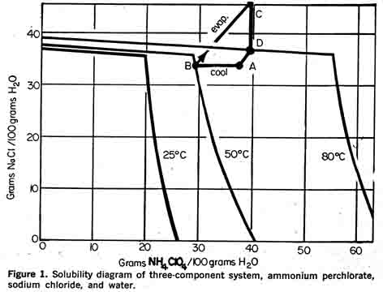
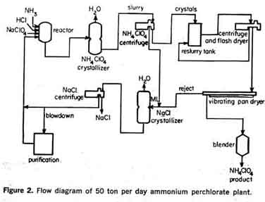
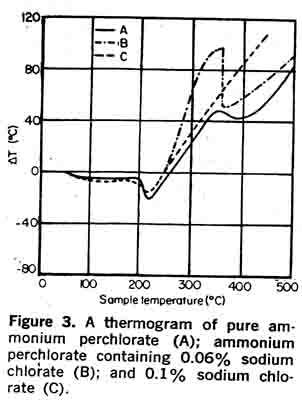
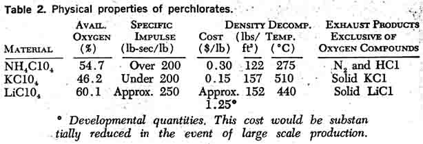
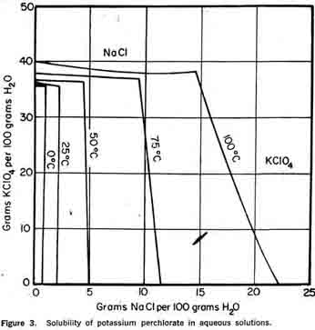
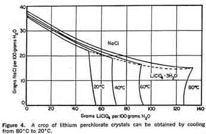

ManufactureThe four major domestic producers of perchlorates all employ the same basic manufacturing method. Sodium perchlorate, an intermediate perchlorate salt, is made exclusively by an electrochemical method—the anodic oxidation of sodium chlorate (I). The common industrial practice has been to produce the ammonium, potassium, or lithium salt by double decomposition, followed by separation of the reaction products by fractional crystallization. The following shows the general scheme of commercial preparation: Electrochemical Oxidation of Sodium Chlorate: There are a number of other methods of manufacturing metal perchlorates; however, none has attained commercial status. A few of these Other preparative methods are:
1. Thermal "self-oxidation" of chlorate (2).
2NaC103 -» NaC104 + NaCl + 02 The thermal "self-oxidation" method has not been adopted commercially because yields are low, by-products are difficult to separate, and the reaction is potentially explosive. Ammonium PerchlorateThe double decomposition reaction previously shown indicates that the chloride salt of potassium and ammonium is used in the manufacture of ammonium perchlorate; however, the  ammonium ion has been introduced in various processes in the form of the sulfate and nitrate salts as well. Both economic and technical factors enter into the selection of the ammonium salt. Of primary importance is the requirement for the fractional separation of a high purity product (6).Figure 1 shows the three-component system ammonium perchlorate, sodium chloride, and water which results from the reaction of sodium perchlorate and ammonium chloride. This system is well suited to fractional crystallization. To illustrate the fractional crystallization, a typical crystallization path is included in the solubility diagram (Figure 1). Starting at point "a" the aqueous solution of the reactant products, sodium chloride and ammonium perchlorate, is cooled, resulting in the crystallization of ammonium perchlorate. The mother liquor of a composition represented by point "b" is then evaporated to composition "c" If the evaporation is carried out under vacuum, sodium chloride crystallizes out of the mother liquor to a composition "d." Thus, a crop of sodium chloride crystals is removed proportional to the length of the line segment "cd." A small amount of water is added to the mother liquor to return to the starting composition "a"; reactants are then added and the cycle is repeated. There is little danger of sodium chloride co-precipitating with ammonium perchlorate in this process because of the flat solubility isotherm of sodium chloride. Ammonium nitrate can also be used as a reactant to form the system ammonium perchlorate-sodium nitrate-water; however, sodium nitrate does not exhibit the temperature independency of sodium chloride so care must be taken to prevent the co-precipitation of sodium nitrate and ammonium perchlorate. Another disadvantage is that the nitrate ion is foreign to the reactant, sodium perchlorate, whereas the chloride ion may be present as an impurity in the sodium perchlorate feed. Economic considerations also support the selection of ammonium chloride in preference to the nitrate. Although sodium nitrate is a more valuable by-product than sodium chloride, a market which would accept the inevitable contamination with ammonium perchlorate would have to be located or developed. Sodium chloride, on the other hand, can be recycled to sodium chlorate cells.  Process flow systemA simplified process flow diagram of the 50 ton per day ammonium perchlorate plant operated by American Potash & Chemical Corp. at Henderson, Nevada, is presented in Figure 2 (7).Anhydrous ammonia, hydrochloric acid, and an aqueous solution of sodium perchlorate are continuously ratioed to the reactor operating above the saturation temperature of ammonium perchlorate. Reactor effluent feeds a continuous vacuum-cooled crystal-lizer. A slurry of ammonium perchlorate crystals from the crystallizer is centrifuged and washed, and the wet crystals are discharged to a reslurry tank. Mother liquor, along with the centrifuge wash tails, is then continuously concentrated in an evaporator to precipitate sodium chloride and maintain the water balance. Mother liquor from the evaporator, depleted in sodium chloride and ammonium per-chlorate, is then returned to the reactor to complete the cycle. The reslurried ammonium perchlorate crystals are pumped to the drying facilities and the crystals are centrifuged, washed, and flash-dried to a surface moisture content of less than 0.01 per cent. Before being packaged, the crystals are screened to remove any that are oversized or undersized and then blended. Rejects from the screens are returned with the centrifuge mother liquor to be recrystallized. Because the process is cyclic, impurities tend to build up. Therefore, a continuous blowdown stream is taken at the point in the process where the impurity concentration is at a maximum. Major impurities enter the plant via the sodium perchlorate feed to the reactor. This feed contains low concentrations of chlorate, chromate, sulfate, calcium, and magnesium ions. Calcium and magnesium salts and sulfate can be held to low build-up rates by extensive use of condensate for centrifuge wash and are removed periodically by soda ash and barium treatment.  In practice it has been found that the sodium chlorate concentration in the ammonium perchlorate crystallizer must be held below two grams per liter to prevent exceeding the sodium chlorate specification in the finished product. This has been found true regardless of the extent of washing in the centrifuges because a small amount of chlorate is retained within the crystal. U. S. Patent No. 1,327,985, issued January 13, 1920, explains that the addition of small quantities of sodium chlorate in amounts ranging from 0.005 to 1.0 per cent by weight makes ammonium perchlorate more sensitive to shock. If the moisture content increases for any reason, ammonium chlorate, an extremely unstable compound, is formed and the sensitivity is further increased. For this reason, ammonium perchlorate-sodium chlorate compositions have not attained commercial acceptance as explosives. Thermal sensitivity The effect of chlorate on the thermal sensitivity of ammonium perchlorate has been examined by DTA (differential thermal analysis). Curve A in Figure 3 shows a thermogram of pure ammonium perchlorate. It is characterized by an endotherm starting at 240°C corresponding to a phase change from orthorhombic to cubic, followed by a decomposition exotherm at 275°C during which 29 per cent of the ammonium perchlorate is de-composed. A second exotherm occurs at 475°C, during which all remaining ammonium perchlorate is decomposed. Curve B is a thermogram of ammonium perchlorate containing 0.06 per cent sodium chlorate. It is seen that the first exotherm is much more pronounced. At 0.1 per cent sodium chlorate (Curve C), the heat generated during the first decomposition step is sufficient to trigger the second decomposition step. Although calcium and magnesium, as chlorides or sulfates, do not appear to affect the stability of ammonium perchlorate, low concentrations of hy-drated and hygroscopic salts of calcium and magnesium are necessary to minimize caking. Pure ammonium perchlorate is not hygroscopic but, like many other crystalline products, will cake, causing processing problems for the propellant manufacturer. The caking tendency can be greatly reduced by the addition of an anti-caking agent, tricalcium phosphate.
LITERATURE CITED1. Schumacher, Joseph C, "Perchlorates— Their Properties, Manufacture and Uses," prepared for publication by the American Chemical Society, Monograph No. 146, Reinhold Publishing Corp., New York (1960). 2. Schumacher, Joseph C, U. S. Patent, 2,733,982 (1956). 3. Bennett, C. W„ and Mack, E. L., Trans. Electrochem. Soc., 29, 323-46 (1916). 4. Leasher, V., Stone, H. W., and Skinner, H. H., Jour. Amer, Chem. Soc, U, 143-44 (1922). 5. Haber, F., and Grinberg, S., Z Anong. Chem., /16, 198-228 (1898). 6. Schumacher^--. Joseph C, U. S. Patent 2,739,873 fl956). 7. Schumacher, Joseph C, and Stern, David R., Chem. Eng. Progress, 53, 428-32 (1957).
|
A problem not usually encountered in other inorganic salts is that when ammonium perchlorate crystallizes out of an aqueous solution, it invariably contains a small amount of included moisture. This included water presents a drying problem because time must be allowed for some of the included water to reach the surface of the crystal.
Equilibrium moisture contentFigure 1 illustrates the time dependency of drying ammonium perchlorate. It is noted that the ultimate equilibrium moisture content is related to the initial total moisture content.
Caking, then, results not from storage in a high humidity environment, but from the slow release of moisture from the interior of the crystals. This could be reduced by prolonged drying before packaging, but this would necessitate handling large quantities of ammonium perchlorate at elevated temperatures, thereby increasing the hazards of the drying process. The solution to the problem is partially obtained by packing ammonium per-ehlorate with bags of desiccant to absorb the moisture as it is released.  Crystallization operationBy far the most critical unit operation in the plant is the crystallization of ammonium per chlorate. Operating problems in centrifuging, drying, screening, and blending can usually be traced to improper control of the crystallizer. For example, a low bed density and low crystallizer circulation rate cause a fine crystal size distribution and, consequently, a high reject rate and overloaded downstream equipment. Propellant manufacturers desire firm, well-rounded, single crystals.
Ammonium perchlorate is dimorphous; the transition between the two crystalline forms, orthorhombic and cubic, occurs at 240°C. Deflagration occurs at about 475°C with evolution of light. At higher temperatures, the decomposition is explosive. Although it would appear from these figures that ammonium perchlorate can be dried in complete safety with conventional equipment and with little regard for temperature, the thermal sensitivity is affected by small quantities of impurities. Also, the decomposition appears to be auto-catalytic so that decomposition products tend to accelerate the reaction. For these reasons, the dryer should have low hold-up and a temperature not exceeding 150°C. High velocities of dry air are used to compensate for these unfavorable drying conditions. Potassium PerchloratePotassium perchlorate is also manufactured by the general double decomposition process. A few process modifications are necessary because of potassium perchlorate's physical and chemical properties.  As indicated in Figure 3, the very low solubility of potassium perchlorate in aqueous solution permits almost complete recovery of perchlorate from the mother liquor by refrigeration to 0°C. In practice, potassium perchlorate is prepared by the addition of a hot, concentrated solution of chemical grade TRONA potassium chloride in slight excess to a sodium perchlorate solution. Crystallization is accomplished by batch cooling. The slurry is filtered and the cake washed to remove chlorides. The potassium perchlorate cake is discharged directed to a rotary driver where the total moisture content is reduced to less than 0.05 per cent. The mother liquor containing chloride, perchlorate, chlorate, sodium, and potassium ions is sent to an evaporator for sodium chloride removal and then used in subsequent batches for crystallizer feed make-up. Gradual impurity build-up necessitates discarding the mother liquor. Potassium perchlorate is more stable than ammonium perchlorate. Unless mixed with combustible substances, it does not tend to ignite or explode. Thus, potassium perchlorate may be dried at much higher temperatures. (Decomposition only becomes noticeable at 455°C.)Lithium PerchlorateLithium perchlorate has not yet been produced in quantities comparable to potassium perchlorate and ammonium perchlorate. A review of its physical properties (Table 2) indicates it is superior to both potassium perchlorate and ammonium perchlorate as a propellant oxidizer in many respects.Table 2 illustrates the superior performance characteristics of lithium perchlorate. On a weight basis, it has a higher oxygen content than ammonium perchlorate, yet lithium perchlorate is more stable. The favorable oxygen content, oxygen balance, and stability are all attractive features of the lithium sale A disadvantage of lithium perchlorate as an oxidizer is that most exhaust products are solids, as are potassium perchlorate exhaust products; thus, performance gains are almost wiped out. There are additional factors to consider. Lithium perchlorate is extremely hygroscopic and exists as a trihydrate at room temperature. Traces of moisture in propellant mixesare intolerable, since moisture affects the aging properties and results in gassing in propellants containing aluminum powders or a polyurethane binder.  In the event propellant manufacturers solve their lithium perchlorate problems and shift their present emphasis on ammonium perchlorate to lithium perchlorate, the existing perchlorate plants can be converted with minor modifications. As indicated in Figure 4, by cooling from 80°C to 20° C a crop of lithium perchlorate crystals would be obtained; then sodium chloride could be recovered by concentration, as in the ammonium perchlorate process. A process has been developed for the preparation of lithium perchlorate based on the reaction of ammonium perchlorate and lithium hydroxide. By boiling an aqueous solution of these reactants, ammonia is driven off. The resulting solution of Lithium perchlorate can be crystallized to yield the trihydrate, or the lithium perchlorate can be recovered by evaporating the solution to dryness. The literature (1) indicates that a process involving the anodic oxidation of lithium chloride using platinum anodes might be developed for the manufacture of lithium perchlorate. 1. Izgaryshev, N. A., and Khachaturyan, M. G., Doklady Akad. Nauk., U.S.S.R., 56, 929-32 (1947) and Doklady Akad. Nauk., U.S.S.R., 59, 1125-28 (1948). | ||||||||||||
HIT THE BACK BUTTON ON YOUR BROWSER